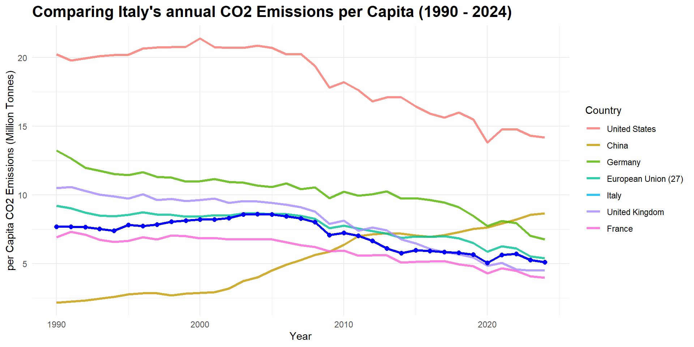
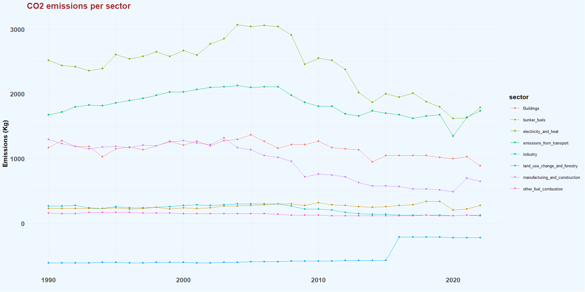
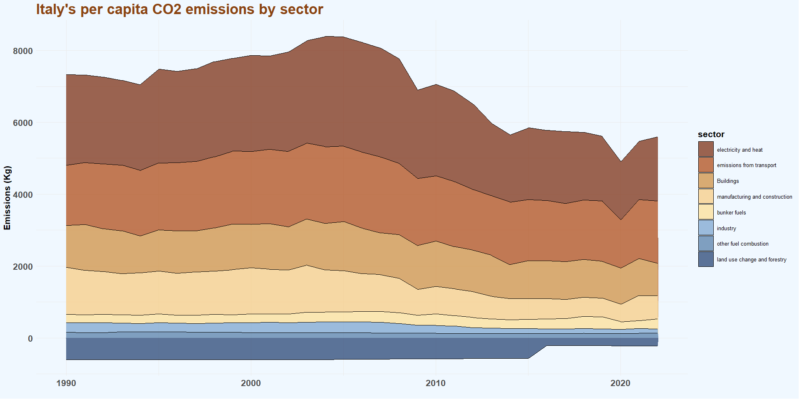
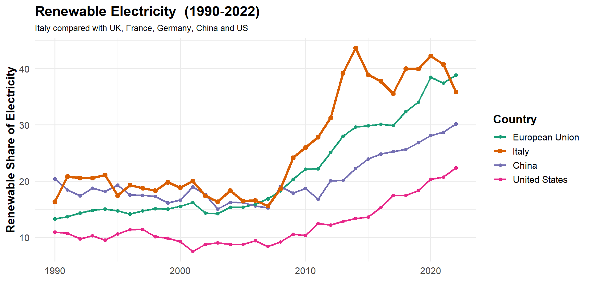

How does Italy’s reduction of carbon emissions compare to its region, USA and China?
Hermann, Sahadat, Jagroop, Shahil, Rahul
Overview and Objectives
The objective is to assess Italy’s overall discharge in CO2 emissions and energy use.
We compare Italy with the EU, China and the US to understand its emission patterns.
We also examine sector wise per capita emissions and the role of renewable energy over period.
Finally, we review Italy’s energy mix and environmental policies to understand its progress towards sustainability.

Method
| Step | Process | Justification |
|---|---|---|
| Research Question | Comparison of Italy’s CO2 emissions reduction using renewable electricity against global countries. | Analysis on Italy’s environmental performance and global comparison. |
| Data Sources | Used datasets from Our World in Data (OWID). | OWID is a reliable, public, and accessible source for fair international comparison. |
| Data Cleaning | First we cleaned column names, filtered data to relevant countries/years, and removed N/A values. | Ensures consistency and accuracy for a fairer comparison. |
| Visuals | Created line graphs, an area chart, and a pie chart which highlighted Italy’s data. | Visuals show trends over time using line/area charts and single-year comparisons using pie chart. |
Italy’s CO2 emissions vs its peers
Data source: Global Carbon Budget (2025); Population based on various sources (2024)
- Italy consistently emits less CO2 per capita than Germany and the wider European Union average, while remaining higher than France.
- The United States emits nearly three times Italy’s CO2 per capita, but China follows an inverse trajectory, with rapid industrialization reaching almost 9 tonnes today.
Italy’s Per capita CO2 emissions by sector
Data source: Climate Watch (2025); Population based on various sources (2024)
Emissions peaked in mid-2000s, led by electricity/heat and transport.
Significant decline since then across nearly all sectors.
Trend reflects cleaner energy, efficiency gains, and economic shifts.
Electricity and heat production for Italy vs its peers
Data source: Climate Watch (2025); Population based on various sources (2024)
Italy’s CO2 emissions are consistently mid level, staying below the US but above China in most sectors.
Electricity, heat and transport emissions in Italy decline after 2005, showing steady long term improvement.
China rises sharply in industry and electricity sectors, while the US stays highest across all categories.
What percentage of Italy’s energy production come form renewable sources?
Italy’s renewable electricity share has seen a steady growth from 1990 to 2022, with massive growth starting from 2008.
Italy outperforms the US and China, while the European Union shows higher renewable growth peaks in 2022.
Italy’s progress shows commitment towards cleaner electricity usage and their transition to achieve that goal.
Data source: Global Carbon Budget (2025) and other sources
Percentage of Italy’s energy production
Data source: Ember (2025); Energy Institute - Statistical Review of World Energy (2025)
Its hydro and solar shares are comparatively strong, aligning with EU trends and reflecting public interest in cleaner, sustainable energy.
Italy uses much less coal and oil than the other countries, giving it a cleaner fossil-fuel profile and supporting public demand for reduced environmental impact.
Although Italy produces more energy from renewable sources than the US and China, and a share similar to the EU, it still relies primarily on gas for its overall energy production.
Environmental policy
Table of Italy’s Environmental Policy Comparison
| Comparative Region | Italy’s Approach | Key Differences |
|---|---|---|
| European Union | Italy aligns with EU goals (PNIEC) but resists strict EV-only mandates, favouring “tech neutrality” (biofuels). | National Flexibility vs. Bloc Targets |
| USA | Italy relies on Carbon Pricing and regulation (“Sticks”); the USA relies on uncapped Subsidies/IRA (“Carrots”). | Regulation vs. Incentive |
| China | Italy has falling emissions but slow democratic permitting whereas China has rising emissions but rapid, state-mandated infrastructure build out. | Democratic Process vs. Command & Control. |
Conclusion
Italy’s emissions have declined steadily across sectors, unlike the USA and China, where declines are slower or inconsistent.
Italy’s per-capita emissions are among the lowest in its comparison group, below the EU average and far below the USA and China.
Growth in renewable electricity is strong, outpacing the USA and China and closely tracking EU progress.
Italy’s energy mix is cleaner than its peers due to low coal use and strong hydro/solar contributions.
Overall: Italy is reducing emissions more sustainably and consistently than the USA and China, and broadly aligns with the EU’s trajectory—though further acceleration is needed to meet long-term climate goals.